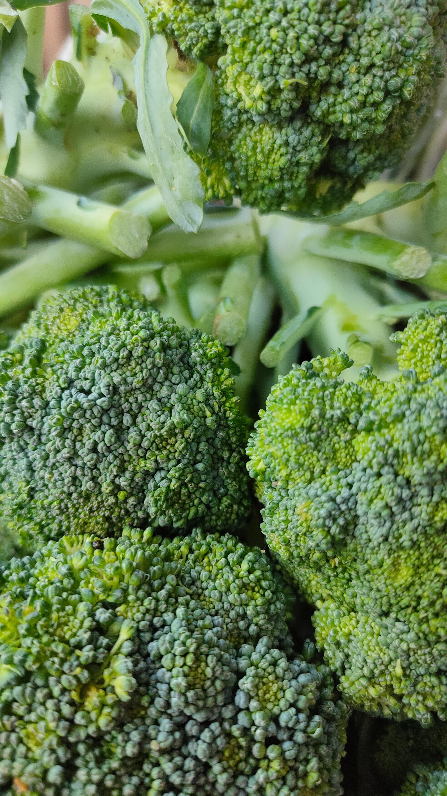

Broccoli

Broccoli is a highly nutritious vegetable that should be a staple in your diet. Packed with essential vitamins, minerals, and antioxidants, it offers a wide array of health benefits. One of the standout nutrients in broccoli is vitamin C, which plays a crucial role in supporting the immune system, collagen synthesis, and overall antioxidant activity in the body. Additionally, broccoli is a rich source of vitamin K, which is important for blood clotting and bone health. Folate, another vital nutrient found in broccoli, is essential for cell growth and development, making it particularly important during pregnancy. Fiber is abundant in broccoli, promoting healthy digestion, regular bowel movements, and a feeling of fullness, making it a valuable addition to a balanced diet. Potassium, a mineral present in broccoli, helps maintain proper nerve function, regulate blood pressure, and support heart health. One of the most remarkable compounds in broccoli is sulforaphane, a potent antioxidant and anti-inflammatory compound. Sulforaphane has been linked to potential cancer-protective effects and offers various other health benefits. Broccoli also contains other valuable antioxidants, including lutein, zeaxanthin, beta-carotene, and quercetin, which help neutralize free radicals, reduce oxidative stress, and support overall health. Incorporating broccoli into your meals offers a wide range of nutrients that support immune function, bone health, heart health, and overall well-being. Experiment with different cooking methods, such as steaming, roasting, or sautéing, to enjoy the delicious flavors and maximize the nutrient content of this versatile vegetable. Make broccoli a regular part of your diet to enhance your nutritional intake and promote a healthier lifestyle.